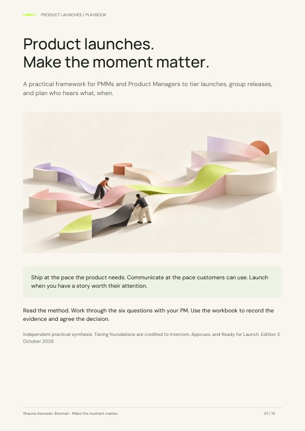
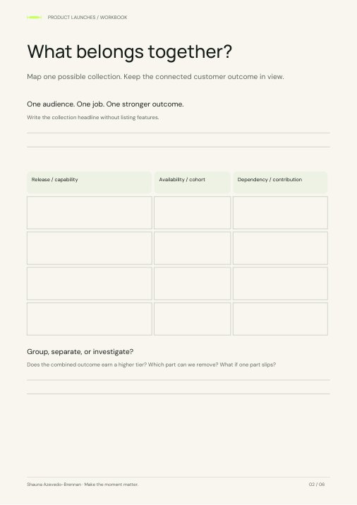

A change. An audience. Some evidence.
Use customer feedback, observed friction, or a commercial opportunity. Make unknowns visible; you do not need a finished brief.
A practical way to decide what deserves the spotlight, what belongs together, and what customers need to hear.

Ship at the pace the product needs. Communicate at the pace customers can use. Launch when you have a story worth their attention.
Open this with your PM. Bring one release, or a few that might belong together. Start with what changes for the customer. Decide how much attention it deserves.
Use customer feedback, observed friction, or a commercial opportunity. Make unknowns visible; you do not need a finished brief.
Use the matrix to compare releases, the six questions to test your decision, and the journey to agree who does what next.
Record the tier, grouping, customer and market timing, owner, and evidence still needed. Download your answers before leaving.
Make it your own: keep your team’s tier names if they already work. Adapt the lead times and channels to your business. Keep the distinction between promotional investment and customer preparation.
Start with the principles ↓ Know the framework? Map your release ↗A launch tier should help you make a trade-off. Where will attention, time, and budget make the biggest difference?
I built my original framework to bring some sanity to competing launch requests. Scream. Shout. Cheer. Whisper. A shared language for deciding where to invest, and a practical way to get Product, Sales, CS, and Marketing on the same page.
The labels still help. The decision behind them matters more. Start with the customer’s job and the commercial opportunity. Then ask whether the change is stronger on its own or as part of a collection.
Name the audience, the outcome, and the commercial consequence. Explain the evidence behind your choice.
Look for releases that help the same audience complete a more valuable job. A theme should make the value clearer.
Separate product availability, customer preparation, and market promotion. Agree the owner of each.
Select a tier to see the investment it calls for and explore its launch journey below.
Scale the campaign to the opportunity. Make these four decisions for every customer-facing release, including a considered “no change needed” where appropriate.
What changed, who can access it, what it costs, and what it depends on. Check which existing claims need updating.
Decide which administrators, users, buyers, and field teams need to know. Use relevant channels rather than a blanket announcement.
Provide the setup, learning, and support the change requires. A simple release note may be enough; a changed workflow may need more.
Name the owner, the evidence of first value, and when to review it. Keep the effort proportionate to the release.
My application: promotional effort can vary while responsibility for accurate information, relevant guidance, and ownership stays explicit.
Adapted from established tiering approaches, including Intercom and Appcues. P0–P3 are the labels in my original template. These are starting points, not a universal scoring model.
Group releases when they help the same customer complete a better job. Give the collection a buying reason you can explain in one sentence.
Mobile approvals + a required connector
Approve a request on shift, without returning to a desk.
A small colour adjustment ships separately. It does not strengthen that story.
Can you name one audience, one job, and one stronger outcome? Can customers access the parts they need? Would the story still make sense if you removed the least relevant feature?
Group when those answers hold. Release individual parts when ready, give customers timely guidance, and bring the fuller story to market when it earns the attention. If an essential part slips, narrow the promise or move the moment.
A monthly or quarterly review can help you find connections. The calendar should not manufacture one.
Intercom’s 2019 launch guidance already covered impact-led tiering, bundles, and targeting. This playbook builds on that foundation.
Compare customer value with business impact. Place releases together, discuss the evidence, and look for a connected outcome worth launching.
Customer value How much does this improve an important job for a defined audience? Bring customer feedback, usage, or observed friction.
Business impact How could it change acquisition, expansion, retention, or GTM direction? Bring the commercial mechanism and evidence.
1. Choose a square. 2. Add a release below. 3. Compare and move. Select a release card, then its new square—or drag it. Start with the fictional example to see how it works.
Bring one release or a possible collection. Work through the questions with your PM, compare the reasoning, and agree what still needs evidence.

A discussion aid, not an approval gate. Answers stay in this page; no AI service receives them. The recommendation uses the rules explained below.
The customer and commercial change sets the provisional tier: a changed GTM suggests P0; a strong buying or expansion reason, or an important blocker, suggests P1; an easier existing job suggests P2; a small improvement suggests P3. Audience answers test the confidence and focus of that choice.
A connected outcome suggests grouping. Unrelated releases stay separate. Staged availability suggests a later market moment, with customer guidance along the way. Unknown evidence, timing, or proof is flagged for discussion.
Customer effort sets the preparation required. It does not automatically raise the promotional tier. A collection can earn a higher tier when its combined value changes the buying case; rerun the questions for that combined outcome. Product and PMM make the final decision and record any override.
Those are different jobs. Give each a deliberate plan.
Batch the market story.
Keep customer guidance timely.
Confirm cohorts, dates, packaging, dependencies, and support. Be clear about what is available today and what is coming later.
Prepare administrators before setup changes. Help users when they have access. Explain expansion value to the buyers it matters to.
Connect the capabilities to an important outcome, a credible difference, and a reason to act. Choose the moment that supports that story.
Batch the market story. Keep customer guidance timely. A campaign date should never hold back information someone needs to prepare, use the product, or understand a material change.
For mobile approvals, preparation starts before access. The market story follows when the combined workflow is ready to show.
Illustrative order, not a fixed schedule. Readiness and customer needs set the dates.
Illustrative example: a connector ships first, mobile access follows, and a supported action completes the workflow. Administrators get setup guidance before access. Eligible users get help as each part arrives. Sales knows which parts are available and to whom.
The market launch comes when employees can complete the connected job from their phone, with proof for that promise. The story is the job they can now finish.
Fin’s October 2026 announcement brings Customer Agent, Operator, teammate tools, and model developments into a wider direction for customer experience. My reading: the system-level story helps connect developments that might otherwise appear as separate updates.
This is an observation of the public announcement. It does not establish Fin’s internal tiering, shipping sequence, or launch performance. Read the announcement ↗
Choose a tier, then explore the stages. Product rollout, customer communication, and the market story have different work to do along the way.
Set this up once, then revisit it when the release process changes. Use the workbook to capture your team’s agreement.
The working agreement is my recommended response to the late-visibility finding, not a process tested by the survey.
Illustrative planning windows, not minimum lead times. Dependencies and readiness set the real dates. Product can ship before the wider market launch.
Follow one eligible cohort through the journey. Choose a time window that fits the job, and use the steps to locate the next question to investigate.
Did a frontline manager complete an approval on mobile? Review eligible managers, first attempts, successful approvals, and repeat use when another request arrives. If attempts fail at the connector, investigate that workflow before increasing promotion.
A diagnostic sequence, not a guaranteed linear funnel. Exposure is a reach proxy, not proof of understanding. Repeat use only matters at the cadence the job requires; track the relevant commercial goal separately.
AI adds pressure to launch planning. It also gives PMMs better ways to keep the work connected.
Appcues × Navattic, September 2026. Survey of 60 marketers through vendor networks; question bases vary. Directional, self-reported evidence; it does not prove AI caused the increase. Read the source ↗
April Dunford’s Positioning in the Age of AI informs the focus on real alternatives and a credible path from today to the future. The launch implications above are my application.
Start with one approved product change and the assets that depend on it. Use AI to find the maintenance work; let the right people verify and approve it.
Product records the capability, availability, limits, and owner.
AI flags affected claims, help content, decks, demos, and guidance.
Show what changes and why. Preserve scope, permissions, and availability.
Product checks facts. PMM checks claims. Channel owners review their material.
Owners update the assets and link them to the approved source version.
Illustrative product change. A search connector gains a request-submission action in a controlled beta. Only named pilot accounts can use it, and the user must confirm the request.
What gets flagged. A sales slide still describes search only. A help article omits the new permission and confirmation step. A demo script implies general availability.
A scoped draft. “Pilot users can submit supported requests after confirmation.” Keep pilot eligibility, configuration, and limitations alongside that claim.
Who reviews. Product verifies task support and access. PMM approves the wording. Enablement and support owners approve the relevant instructions before publication.
What closes the loop. Link the revised slide, help article, and demo script to the approved release record. Record the owner and next review trigger.
This is a proposed workflow and fictional example, not a claim that these integrations or automatic updates are running. It can begin with one shared document and your existing assistant.
Use it to organise customer and market signals, compare product changes with approved messaging, and flag assets that need updating. Keep sources attached. Have Product verify capability and availability, and PMM own the interpretation and message.
A shared launch record can connect this playbook to a messaging hub: audience, outcome, claims, proof, availability, owner, and review triggers. Start with the tools your team already uses.
For AI products, borrow from outcome evaluation: check whether the supported job actually completes, under which conditions, and with what human input. Anthropic’s evaluation guidance informs this recommendation; a successful demo alone does not establish business impact.
Use the playbook for the reasoning and the workbook to agree what matters for your next release or collection.

The framework, minimum release standard, Product agreement, adoption check, AI maintenance flow, and credited sources.
Download the playbook ↓
Worksheets for value, grouping, audience timing, the launch decision, Product’s working agreement, and adoption follow-through.
Download the workbook ↓Make it part of the next release review. The playbook ends with a one-page decision guide. The workbook includes a grouping canvas, audience plan, Product working agreement, adoption check, and decision record. The reusable canvas below lets your team keep using the method.
Open the editable planning canvas ↗ · Download the complete toolkit ↓
The canvas works in your browser, with printing and a Markdown export. Your notes stay on the page. The toolkit also includes a short meeting agenda and a filled example to help your team get started.
I’ve evolved this from the template I used internally, the launch course I took, and ideas worth learning from. Here is what came from where.
The foundations. Intercom and Appcues informed tiering and prioritisation. Ready for Launch strengthened the connection between research, GTM strategy, and execution.
My perspective. Use the framework as a shared decision with Product. Judge a collection by its customer outcome. Separate promotional investment from customer preparation. Keep product facts, promises, and audience timing connected as they change.
The current context. Recent launch research, AI positioning guidance, and public product examples help pressure-test what needs to evolve. They are not proof that this diagnostic predicts a launch result.
The foundation: give different releases different levels of attention.
Impact-led tiering, grouping related releases, and targeted communication. Grouping is an established practice, not an invention of this playbook.
Andy McCotter-Bicknell, Jason Oakley, and Tamara Grominsky. Research, segmentation, positioning, tiering, GTM themes, execution, and enablement. Referenced from the public syllabus; course materials are not reproduced here.
A practical influence on my original tiering template and its launch motions. Labels and tier numbering vary between frameworks.
Position against the alternatives buyers actually consider. Connect a credible future direction to value customers can buy today. This is positioning guidance, not a launch-tiering framework.
60 marketers surveyed through vendor networks. 75% reported faster shipping; 7% said their launch process kept up. Small, self-reported sample; question bases vary. It does not establish AI as the cause.
A public example of several product developments presented through a broader customer-experience direction. It does not reveal internal tiering, release dates, or launch effectiveness.
Engineering guidance on evaluating outcomes and monitoring changes. Applying those lessons to launch claims is my PMM interpretation.
Independent playbook by Shauna Azevedo-Brennan. No affiliation or endorsement is implied. Research reviewed October 2026. Tier numbering and diagnostic rules are local conventions, not a certified methodology.